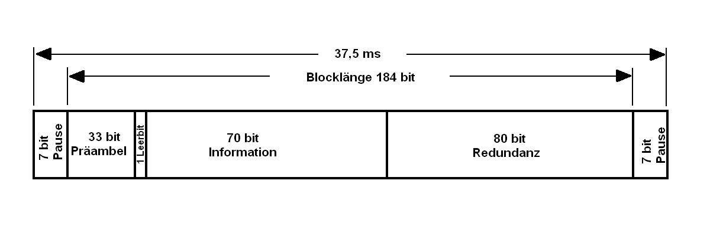
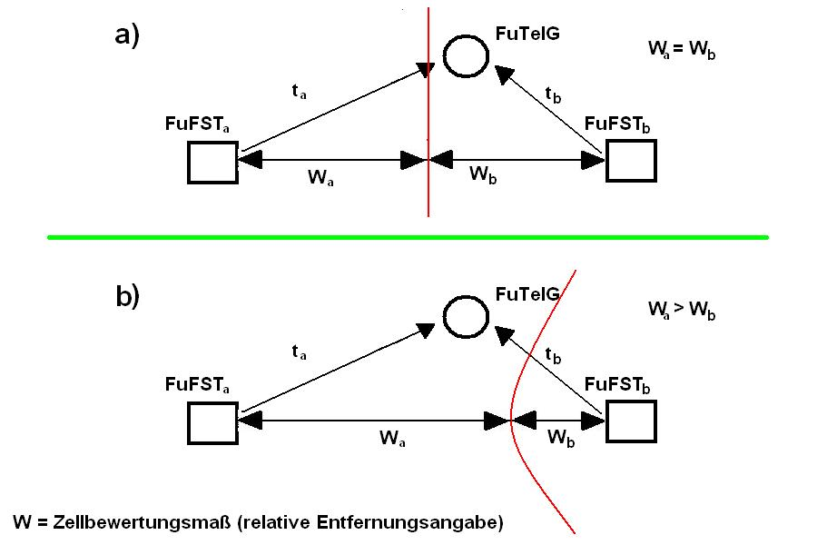

|
Folgender Abschnitt ist entnommen aus dem Handbuch: Mobilfunk – Josef Kedaj / Günther Hentschel |
|
|---|---|
|
3. Schnittstellen im Funktelefonnetz C Die Steuerung und Zusammenarbeit der einzelnen Netzkomponenten im C-Netz bilden ein verteiltes Mehrrechnersystem. Ihr geordnetes Zusammenwirken wird durch Schnittstellenbedingungen festgelegt. a) Schnittstelle Funktelefongerät-Funkfeststation (Funkschnittstelle) In dieser Schnittstelle sind im wesentlichen die analogen funkspezifischen Parameter (z.B. Empfängerempfindlichkeit), die Funkorganisation und das Protokoll zwischen Funktelefongeräten und Funkfeststationen festgelegt. Die Festlegung der Schnittstelle ermöglicht und gewährleistet die Kompatibilität der Funktelefongeräte verschiedener Hersteller mit dem System. b) Schnittstelle Funkfeststation - Funkvermittlungsstelle Der Sprechverkehr zwischen Funkfeststation und Funkvermittlungsstellen wird über signalisierungsfreie 4-Draht-Sprechleitungen abgewickelt. Die vermittlungstechnische Zeichengabe erfolgt über zentrale Zeichenkanäle mit dem Zeichengabesystem nach CCITT Nr. 7 und einer Übertragungsgeschwindigkeit von 4,8 kbit/s. Die spezifischen Vermittlungsprozeduren werden über einen nationalen Anwenderteil des Zeichengabesystems (Mobile User Part) verwirklicht. c) Schnittstelle Funkvermittlungsstelle-Funkvermittlungsstelle Der Sprechverkehr zwischen verschiedenen Funkvermittlungsstellen wird über eine digitale Schnittstelle abgewickelt. An den Schnittstellen liegt ein 2-Mbit/s-Signal an. Die vermittlungstechnische Zeichengabe wird über die Sprechleitungen durch Impulskennzeichengabe (IKZ 50) geführt. Der zwischen den Funkvermittlungsstellen erforderliche Austausch teilnehmerbezogener Daten (Informationen über den aktuellen Aufenthalt (FuFSt) des Teilnehmers, Gebührendaten usw.) wird über eine analoge Schnittstelle mit Hilfe gedoppelter zentraler Zeichenkanäle mit dem Zeichengabesystem nach CCITT Nr. 7 (Mobile User Part) und 4,8 kbit/s geleitet. d) Schnittstelle Funkvermittlungsstelle-SWFD-Netz Das C-Netz ist mit dem SWFD-Netz über eine digitale Schnittstelle verbunden. An der Schnittstelle liegt wie bei der Schnittstelle FuVSt-FuVSt ein 2-Mbit/s-Signal an. Die vermittlungstechnische Zeichengabe wird ebenfalls mit Hilfe des Impulskennzeichengabe-Verfahrens (IKZ 50) ausgetauscht. Zu den für die entsprechenden Funkzellen zuständigen Notrufstellen (z.B. Polizeidienststellen) wurden von der FuVSt eigene Leitungen geschaltet. e) Schnittstelle Funkvermittlungsstelle-Betriebszentrale Über diese Schnittstelle erfolgt der für den zentralisierten Betrieb erforderliche Datenaustausch. Daten von und zu den ortsfesten Funkstellen werden dabei über die angeschlossene Funkvermittlungsstelle weitergereicht. 4. Organisationsfunktionen an der Luftschnittstelle Alle Organisationsfunktionen, die über die Luftschnittstelle d.h. zwischen der FuFSt und dem FuTelG abgewickelt werden, laufen über systemeinheitliche Organisationskanäle (OgK). Über den Organisationskanal werden beim Einschalten eines FuTelG die Aktivdatei informiert und die Erreichbarkeit eingebuchter Teilnehmer in regelmäßigen Abständen von der FuFSt aus überprüft. Ebenfalls werden die Funktionen für den Verbindungsaufbau für beide Richtungen ausschließlich im Organisationskanal abgewickelt. Durch den Einsatz eines netzeinheitlichen, zeitgeteilten Organisationskanals (blockstrukturiertes Zeitmultiplexverfahren) besteht für das Funktelefongerät bei einem Zellenwechsel keine Notwendigkeit für einen Frequenzwechsel. Dadurch ist es nicht nur über den Organisationskanal ständig erreichbar, sondern hat auch einen Überblick über die gesamte Funkumgebung. Bevor sich das FuTelG nach dem Einschalten einer FuFSt zuordnen kann und damit einen Einbuchantrag auf dem Organisationskanal überträgt, muß es entsprechend vorgegebener Kriterien zum Funkumfeld und zum Standort Messungen zum gesamten Umfeld durchgeführt haben. 5. Aufbau der Organisationskanäle Damit das betriebsbereite Teilnehmergerät alle umliegenden FuFSt auf derselben Frequenz in definierten zeitlichen Abständen empfangen und die entsprechenden Daten auswerten kann, wird für die einzelnen Funkfeststationen eine Synchronität der Sendephasen verlangt. Die Signalisierungsstruktur des OgK besteht aus einem periodischen Rahmen mit einer Zeitdauer von 2,4 s, der aus 32 Zeitschlitzen von je 75 ms Dauer besteht. Aufgrund interner Systemfestlegungen ist es erforderlich, jeder FuFSt mindestens einen Zeitschlitz pro Rahmen zuzuweisen. Da jeder Zeitschlitz mit Organisationsverkehr einer bestimmten Menge abwickeln kann, sind je nach Verkehrsaufkommen mehrere Zeitschlitze pro Rahmen für eine FuFSt erforderlich. Um Störungen im Organisationskanal zu vermeiden, müssen in benachbarten Funkzellen unterschiedliche Zeitschlitze verwendet werden. Deshalb muß für das gesamte Netz eine exakte Zeitschlitzplanung durchgeführt werden. Dabei sind ähnliche Kriterien für die Zeitschlitzwiederholung in verschiedenen Funkzellen wie für die Frequenzplanung zu beachten. Bei idealen Verhältnissen können auf 7 benachbarte FuFSt alle 32 Zeitschlitze eines Rahmens verteilt werden. Die Zahl der für eine FuFSt benötigten Zeitschlitze hängt von vielen Parametern ab. Für eine FuFSt z.B. mit 30 Sprechkanälen in einer Großzelle ohne Autobahnen werden bei normalem Teilnehmerverhalten 6 Zeitschlitze pro Rahmen für die Abwicklung des OgK-Verkehrs benötigt. Durch das Zeitschlitzverfahren verringert sich die Organisationskapazität, die für eine FuFSt zur Verfügung steht, um den Teilungsfaktor (bei z.B. 4 Zeitschlitzen also auf 4/32 = 1/8). Reicht die verfügbare Kapazität pro Rahmen nicht aus, so werden in den Verkehrsschwerpunkten weitere Organisationskanäle mit derselben Organisationsstruktur eingerichtet. Drei weitere Frequenzpaare sind bundesweit koordiniert. Ein für die FuFSt und das FuTelG festgelegter Algorithmus sorgt in diesen Fällen für eine gleichmäßige Verkehrsverteilung auf den einzelnen Frequenzen.
Abb. 3445-1: Zeitrahmen und Blockstruktur im Og-Kanal Damit beim Verlassen einer Funkzelle mit hohem Verkehrsaufkommen das FuTelG über die Zeitschlitzsituation in der Nachbarzelle informiert wird, ist in den umliegenden FuFSt jeweils mindestens ein Zeitschlitz auf den im Nachbarbereich genutzten OgK-Frequenzen eingerichtet. Hier findet das FuTelG dann z.B. die Information, daß es wieder auf den netzeinheitlichen Organisationskanal zurückschalten muß. Das Zeitteilungsverfahren im OgK hat also den großen Vorteil, daß jedes Funktelefongerät im gesamten Netzbereich stets denselben Kanal benutzen und immer die Empfangsqualität der eigenen Funkzelle und der benachbarten Funkzellen bei ständiger Anrufbereitschaft überwachen und bewerten kann. Um sowohl optimale Signalisierungskapazität als auch minimale Blok-kierungswahrscheinlichkeit zu erreichen, ist jeder Zeitschlitz nochmals unterteilt und zwar in einem Rufblock und einen Meldeblock. Der Rufblock ist für den zufallsverteilten Zugriff des FuTelG zur FuFSt eingerichtet. Signalisierungen im Meldeblock werden ausschließlich von der FuFSt gesteuert Auch der OgK ist wie jeder andere Kanal im System ein Duplexkanal; die gleiche Zeitschlitzanordnung gilt für das Ober- und das Unterband. Signalisierungsblöcke werden im Unterband (Senden des FuTelG) mit einem einheitlichen Zeitversatz von zwei Zeitschlitzen entsprechend 150 ms zwischen Meldung und Quittung ausgetauscht. Alle Meldungen, die zwischen FuTelG und FuFSt ausgetauscht werden, belegen jeweils einen Block, d.h. einen halben Zeitschlitz für eine Dauer von 37,5 ms. 6. Signalisierung im Organisationskanal Abbildung 3446-1 zeigt das Signalisierungsformat für die Übertragung einer vollständigen Nachricht im Ruf- oder Meldeblock des OgK. Jeder Datenblock setzt sich aus 184 bit zusammen und enthält in den 70 Nutzbit eine vollständige Funkdatenmeldung. Die jeweils zugehörigen 80 Redundanzbit gestatten auf der Empfangsseite eine Fehlererkennung und - abhängig von der Wertigkeit der Informationen - eine Fehlerkorrektur. Zur höheren Übertragungssicherheit werden die Nutz- und Redundanzbit nach einem bestimmten Schema zeitverschachtelt auf dem Funkweg übertragen, wobei das Verfahren die Störmechanismen des Funkweges (z.B. Burststörungen) in besonderer Weise berücksichtigt. Durch Anwendung des BCH-7,15-Codes können insgesamt bei einem Telegramm bis zu 20 bit korrigiert werden. Eine 7 bit lange Pause wird zu Beginn und am Ende einer jeden Nachricht eingefügt, um durch weiche Sendertastung die erforderliche Störfreiheit in den Nachbarkanälen zu erzielen.

Abb. 3446-1: Datenformat im Organisationskanal Für Synchronisationszwecke enthält ein Telegramm in der Präambel einen aus 3 x 11 bit bestehenden sog. Barker-Code, dem ein einzelnes Leerbit folgt. Bei einer Übertragungsgeschwindigkeit von 5,28 kbit/s hat eine vollständige Signalisierungsnachricht einschließlich der 14 bit am Anfang und Ende eine Dauer von 37,5 ms und belegt somit einen halben Zeitschlitz. Zur eindeutigen Identifizierung der Art einer Meldung ist jeweils in der Signalisierungsinformaion an festgelegter Stelle ein 6 bit langer Operationscode eingefügt. Es können insgesamt 64 Meldungsparameter unterschieden werden. Durch die Notwendigkeit, den Empfang eines Telegramms zu bestätigen, wird eine hohe Sicherheit auf dem Übertragungsweg erreicht. Dabei wird ein Telegramm solange in Folge gesendet, bis die Quittung von der Gegenseite empfangen wird. Wird das Telegramm aufgrund ungünstiger übertragungstechnischer Bedingungen nicht empfangen oder kann es nicht korrekt decodiert werden, veranlaßt eine Zeitüberwachung den Abbruch des Signalisierungsdialogs. Ein Rücksprung bei der FuFSt sowie im FuTelG in definierte Ausgangsstellungen ist durch Prozeßprogramme sichergestellt. Die FuFSt sendet im Rufblock die Telegramme für den Verbindungsaufbau bei abgehendem und ankommendem Verkehr. Die Quittungen für die beiden Signalisierungen der FuFSt "Verbindungsaufbau gehend" und "Vebindungsaufbau kommend" enthalten für das FuTelG Kanalbefehle. Das FuTelG schaltet auf den vorgegebenen Sprechkanal um und sendet die Quittung zu den vorangegangenen Telegrammen auf dem angegebenen Sprechkanal. Bei bestehendem Warteschlangenbetrieb in der FuFSt sind für den beabsichtigten Verbindungsaufbau weitere Meldungen festgelegt, um das Teilnehmergerät und damit auch den Teilnehmer von dem verzögerten Gesprächsaufbau zu informieren. In allen nicht an ein bestimmtes FuTelG gerichteten Rufblöcken sendet die FuFSt Leerrufe. Hierin sind allgemeine Informationen enthalten, die für einen ordungsgemäßen und optimalen Betrieb der FuTelG, die sich im Versorgungsbereich der FuFSt befinden, wichtig sind.
Die FuFSt sendet einen Sperraufruf als Quittung auf einen Einbuchversuch eines FuTelG, dessen Rufnummer in der Heimatdatei noch geführt wird, das aber zum Führen von Gesprächen keine Berechtigung mehr besitzt. Im Meldeblock sendet die Funkfeststation Meldeaufrufe zur Prüfung der Anwesenheit von FuTelG im Versorgungsbereich. Alle Teilnehmer, die in der Aktivdatei geführt sind, werden in Zeitabständen von 1 bis 6,5 Minuten - der Abstand ist abhängig von der Belegung des Meldeblocks -gerufen. Die Quittung gibt das FuTelG auf dem Meldeblock des Unterbandes. Die FuFSt sendet bei freier Kapazität im Meldeblock im Melde-Leerruf Zustandsinformationen für die FuTelG, die inhaltlich bis auf geringe Abweichungen mit den Leerrufen im Rufblock übereinstimmen. Auch in der Übertragung vom Teilnehmergerät aus sind die Zeitschlitze im OgK in jeweils zwei Blöcke aufgeteilt, die vom FuTelG für festgelegte Aktivitäten belegt werden. Im Rufblock des Unterbandes setzt das FuTelG nach dem Einschalten und der Auswahl der richtigen Funkzelle seine Erstmeldung ab (Einbuchen). Nach Prüfung der Berechtigung und Eintrag in die Aktivdatei quittiert die FuFSt diese Meldung auf dem Rufblock des Oberbandes. Eine ähnliche Prozedur läuft bei der Umbuchmeldung ab. Wünscht der Teilnehmer eine Verbindung vom Teilnehmergerät aus in das Fernsprechnetz oder zu einem anderen FuTelG aufzubauen, beginnt der Dialog mit der FuFSt ebenfalls im Rufblock. Die Funkblöcke werden bis auf den Rufblock im Unterband durch die Funkfeststation belegt oder gesteuert. Dies bedeutet, daß die ganze zur Verfügung stehende Kapazität genutzt werden kann. Auch die Verteilung auf die unterschiedlichen Funkblöcke konnte somit optimiert werden. Meldeaufrufe, die nicht zeitkritisch sind, sendet die FuFSt, wenn die Funkblöcke nicht für Nachrichten höherer Priorität benötigt werden. Von entscheidender Bedeutung für die Kapazität des OgK ist der Rufblock im Unterband. Viele FuTelG bewegen sich im Versorgungsbereich einer FuFSt; sie setzen aus der Sicht der Funkfeststation zufallsverteilt Informationen für Einbuchen, Umbuchen und abgehende Belegungen ab. Die Belegung eines bestimmten Funkblocks durch ein bestimmtes FuTelG kann von der Feststation nicht gesteuert werden, da der Zeitpunkt nicht vorhersehbar ist. Sobald ein FuTelG einen belegbaren Zeitschlitz erkannt hat, versucht es, z.B. der zugehörigen FuFSt einen gehenden Verbindungswunsch zu signalisieren. Wenn der FuFSt nur ein Zeitschlitz pro Rahmen (Länge 2,4 s) zugeteilt wurde, kann nicht ausgeschlossen werden, daß gleichzeitig ein anderes FuTelG ebenfalls eine Meldung abgesetzt hat. Konnte aus funktechnischen Gründen keine der Meldungen von der FuFSt ausgewertet werden, erhält keines der FuTelG eine Quittung. Für einen erneuten Versuch wird das FuTelG nach einem Zufallsverfahren mit Gleichverteilung einen neu zu belegenden Zeitschlitz auswählen. Hierdurch verringert sich die Wahrscheinlichkeit einer gleichzeitigen Belegung erheblich. 7. Leistungsfähigkeit des Organisationskanals Die Leistungsfähigkeit eines OgK hängt im Prinzip von den folgenden Ereignissen in der Hauptverkehrsstunde ab:
Da aber der Rufblock im Unterband unter Mehrfachzugriff (ALOHA-Kanal) steht, ist er für die Leistungsfähigkeit des OgK bestimmend. Bei einem Verlust von maximal 1 % darf das Verkehrsangebot pro zugeteiltem Zeitschlitz für die FuFSt 0,3 Erlang nicht übersteigen. Die volle Kapazität eines Funkblocks, der im 2,4-s-Zyklus eines Organisationsrahmens genutzt wird, beträgt 1 500 Nachrichten pro Stunde. Bei den angegebenen Bedingungen ergeben sich dabei für den Rufblock 480 Nachrichten pro Stunde. Entsprechend dem zu erwartenden Verkehrsangebot muß für jede FuFSt die Zahl der Zeitschlitze aus dem für eine Gruppe von Funkfeststationen verfügbaren Rahmen von insgesamt 32 Zeitschlitzen festgelegt werden. Bei höherem Bedarf müssen weitere Organisationskanäle installiert werden. 8. Informationsaustausch auf dem Organisationskanal Bei einer idealen Flächenversorgung besteht an jedem Ort eine ausreichende Feldstärke für eine Kommunikation zwischen einem FuTelG und einer FuFSt. Die Funkversorgungsbereiche benachbarter FuFSt überlappen sich, so daß keine Feldstärkenlücken auftreten. Dennoch kann eine Verbindung zum FuTelG aus dem SWFD-Netz oder von einem anderen Funkteilnehmer nur dann hergestellt werden, wenn dem System über Dateien bekannt ist, in welcher Funkzelle sich der gewünschte Teilnehmer gerade aufhält. Es ist daher zwingend erforderlich, daß das FuTelG seine Standortmeldung automatisch veranlaßt. 9. Einbuchen Wird das FuTelG eingeschaltet, wertet es als erstes über den netzeinheitlichen Organisationskanal die gesamte funktechnische Umgebung nach Kriterien für die Feldstärke, den Geräuschabstand und die relative Empfangsphase (Entfernung) aus. Alle Werte werden unter Zuordnung zu der jeweiligen FuFSt in der Fahrzeuganlage gespeichert. Nach erfolgter Auswertung gibt das Gerät im Rufblock eine "Erstmeldung" zum Einbuchen ab, die Kenndaten des Funkteilnehmers enthält. Auch im eingebuchten Betriebszustand muß das FuTelG die Funkdaten aller FuFSt seiner Umgebung weiter beobachten und bewerten, da sich das Funkfeld durch Standortwechsel des Gerätes naturgemäß ändern wird. Hat das FuTelG seine Erstmeldung abgesetzt, prüft das System zuerst die Berechtigung des Teilnehmers. Nach dem Eintrag der FuTelG-Ken-nung in die Aktivdatei sendet die FuFSt die Einbuchquittung. Befindet sich der Teilnehmer bei der Einbuchung in einem fremden Funkvermittlungsbereich, wird zusätzlich noch ein "Aktivvermerk" mit der Angabe der FuFSt-Kennung in der Fremddatei der zugehörigen FuVSt vorgenommen. In der Heimatdatei ist in diesem Falle nur vermerkt, in welchem FuVSt-Bereich der Teilnehmer z. Zt. aktiv ist. Durch die Speicherung der Standortinformation in der Vermittlungsebene ist bei einem Verbindungswunsch aus dem SWFD-Bereich (ZVSt-FuVSt) das System in der Lage, sofort eine Weiterverarbeitung durchzuführen. 10. Umbuchen Wenn der mobile Teilnehmer eine Funkzellengrenze überquert, erkennt das FuTelG aufgrund der laufend durchgeführten Bewertung der Signalisierungen im OgK, daß eine andere FuFSt für einen möglichen Verbindungsaufbau zuständig ist und veranlaßt eine Umbuchung. Die neue FuFSt trägt den Funkteilnehmer in ihre Aktivdatei ein und meldet dies der zugehörigen FuVSt, die ein Ausbuchen aus der Aktivdatei der bisherigen FuFSt veranlaßt. Sollte sich der Teilnehmer in einem fremden FuVSt-Bereich aufhalten, so ist eine Weitergabe der neuen Informationen an die Heimatdatei nur dann erforderlich, wenn sich die Bezugs-FuVSt durch die Umbuchung geändert hat. 11. Erreichbarkeitsprüfung Damit die in den Dateien eingetragenen Informationen aktuell sind, fordert die FuFSt in einem zeitlichen Zyklus, der von der momentanen Verkehrsbelastung des OgK bestimmt wird, jeden eingebuchten Funkteilnehmer auf, sich zu melden. Beantwortet das Teilnehmergerät drei aufeinanderfolgende Meldeaufrufe nicht, wird es aus der Aktivdatei ausgebucht. Das Teilnehmergerät ist ebenfalls dann ausgebucht, wenn es über einen Zeitraum von max. 20 Minuten keinen Meldeaufruf oder eine andere für sich bestimmte Signalisierung mehr empfangen und decodieren konnte. Wenn die Aktivvermerke gelöscht sind, erhält ein anrufender Teilnehmer nach Prüfung in der Heimat- bzw. Fremddatei sofort aus der Eingangs-FuVSt die Ansage "Zu diesem Anschluß besteht z.Zt. keine Funkverbindung" anstelle der früher gebräuchlichen, aber mißverständlichen Ansage "Dieser Anschluß ist vorrübergehend nicht erreichbar". 12. Pegel-/Jitterbewertung Wie schon oben erläutert, muß das FuTelG vor dem Einbuchen die Auswahl der richtigen FuFSt nach bestimmten Kriterien, z.B die Auswahl entweder nach Feldstärke oder nach relativen Entfernungen zu den FuFSt, durchführen. Wird eine Pegelbewertung gefordert, mißt das Fu-TelG die Feldstärke aller im OgK empfangbaren FuFSt und kontrolliert gleichzeitig, ob der zugehörige Jitterwert der empfangenen Digitalinformationen nicht einen dem gemessenen Pegel zugeordneten Grenzwert überschreitet. Die am besten empfangene FuFSt wird ausgewählt. Damit kurzzeitige Feldstärkeschwankungen nicht zu falschen Ergebnissen und z.B. auch nicht zu Umbuchung führen, bildet das FuTelG Mittelwerte und reagiert erst nach Ablauf einer vorgeschriebenen Bewertungsdauer. 13. Leistungsregelung Zur Minimierung von Gleichkanal- und Intermodulationsstörungen wurde im C-Netz eine adaptive Leistungsregelung eingeführt, die in acht Stufen einen Dynamikbereich von insgesamt ca. 35 dB umfaßt. Ermittelt das FuTelG während einer Verbindung, daß der Empfangspegel am Empfängereingang höher ist als der Grenzwert für die Sendeleistungsregelung, wird das Ergebnis in der nächsten "verteilten" Signalisierung zur FuFSt übertragen. Die FuFSt reagiert auf diese Information durch die Reduzierung der Sendeausgangsleistung um eine Stufe. Umgekehrt wird die Änderung der Leistung des FuTelG eingeleitet, indem die dazu nötige Information von der FuFSt übertragen wird. 14. Informationen für den Verbindungsaufbau, Warteschlangenbetrieb Bei einem vom Funktelefon-Teilnehmer ausgehenden Gespräch wird die vollständige Wahlinformation über den gewünschten Teilnehmer in den Funkblöcken des OgK signalisiert. Dadurch können die vorhandenen Sprechkanäle besser genutzt werden. Sind noch freie Kanäle verfügbar, kann die Verbindung schon auf den Sprechkanal umgeschaltet werden, bevor sich der gerufene Teilnehmer gemeldet hat. Bei hoher Kanalnutzung führt die Wahlzeit (Verbindungsaufbau im SWFD-Netz) und die Meldewartezeit (Zeitdauer vom ersten Ruf beim Teilnehmer bis zum Abheben) prinzipiell zu einer Einengung der nutzbaren Sprechkanalkapazität. Dieser Effekt kann durch den sog. "Warteschlangenbetrieb" erheblich abgemindert werden. Der Wartebetrieb, der es erlaubt, die Sprechkanäle zu fast 100 % mit reinem Gesprächsverkehr auszulasten, beginnt in einer Funkzelle dann, wenn der letzte freie Sprechkanal belegt wurde und ein weiterer Gesprächswunsch eintrifft. Die FuFSt sendet nach dem Belegen des letzten Kanals im Leerruf des OgK eine Warteschlangenkennung zur Information der FuTelG. Setzt ein Funkteilnehmer in dieser Phase einen Verbindungswunsch ab, wird ihm die Warteschlangensituation an seinem Gerät optisch und akustisch angezeigt. Die Verbindungswünsche werden in eine Warteschlange eingereiht und bei Freiwerden von Sprechkanälen in der Reihenfolge ihres Eintreffens bedient. Dabei werden jedoch festgelegte Prioritäten in der folgenden Reihenfolge berücksichtigt:
Zur Verwaltung dieser unterschiedlichen Verkehrsanteile sind jeweils zugehörige Warteschlangen eingerichtet, die alle in eine sog. Zuteilungsliste münden. Erst bei Aufnahme in die Zuteilungsliste werden die Verbindungen ins Netz aufgebaut. Durch diese Maßnahme soll verhindert werden, daß ein Verbindungsaufbau zu früh erfolgt und die Wartezeit auf einen freien Kanal sich für den Betrieb störend auswirkt. Hebt der gerufene Teilnehmer ab, bevor ein Sprechkanal zugeteilt werden kann, erhält er während der Wartezeit aus der FuVSt die Ansage "Funkgespräch, bitte nicht auflegen" statt der bis vor kurzem gültigen Ansage "Funkgespräch-bitte warten". In der Gegenrichtung, d.h. wenn ein Anruf vom SWFD-Netz nicht sofort durchgeschaltet werden kann, weil der Verbindungswunsch in eine Warteschlange mündet, erhält der Teilnehmer die Ansage "Bitte warten-Sie erhalten den nächsten freien Funkkanal. Die Wartezeit ist gebührenfrei." Die Warteplätze müssen unter dem Gesichtspunkt geringster Betriebsbeeinträchtigungs bei optimaler Nutzung der Kanalbündel dimensioniert werden. Die Zahl der Warteplätze wird dabei der Anzahl der Sprechkanäle der jeweiligen FuFSt angepaßt, damit Wartewahrscheinlichkeit und mittlere Wartezeit für den Teilnehmer akzeptabel bleiben. Bei dem hier vorliegenden Warte-Verlust-System ist der maximale Verlust B = 5 % vorausgesetzt. Bei ca. 95 % aller Wartefälle soll für den Funkteilnehmer die mittlere Wartezeit 15 s nicht überschreiten. Die Zahl der Warteplätze in der Zuteilungsliste ist so bemessen, daß ein gerufener Teilnehmer im Mittel nur wenige Sekunden die Ansage hört, wenn noch kein Kanal zugeteilt werden konnte. Bei Kanalbündeln mit bis zu drei Sprechkanälen pro FuFSt wird kein Warteschlangenbetrieb aktiviert, weil in diesen Fällen die mittleren Wartezeiten nicht zu vertreten sind. Ein grundsätzlicher Nachteil des vorzeitigen Verbindungsaufbaus im Warteschlangenbetrieb ist darin zu sehen, daß in einigen Fällen keine eindeutige Signalisierung von der FuVSt ausgewertet werden kann oder daß beim gerufenen Teilnehmer ein Ansagegerät installiert ist, so daß Informationen für den Funkteilnehmer verloren gehen können. Mögliche Nachteile bei abgehenden Gesprächen ins Ausland werden dadurch vermieden, daß erst nach der Belegung eines freien Sprechkanals mit der Wahl in das SWFD-Netz begonnen wird. Es sei noch erwähnt, daß bei extrem hoher Belastung eines Kanalbündels die Gesprächsdauer automatisch begrenzt werden kann. Dabei wird eine Mindestdauer, die programmierbar ist, für jedes Gespräch sichergestellt. Von der Möglichkeit der Gesprächsdauerbegrenzung wird jedoch zur Zeit nur im Beitrittsgebiet Gebrauch gemacht. 15. Entfernungsbewertung Die geeigneten FuFSt werden im Regelfall im C-Netz vom FuTelG ausgewählt. Die von den FuFSt im OgK übertragenen Signale werden nach ihrer Phasenlage im Empfänger des FuTelG ausgewertet und zu den Parametern "relative Entfernungsangabe" der FuFSt in Beziehung gesetzt. Im Gegensatz zur Pegelbewertung ermöglicht die Entfernungsbewertung eine sehr genaue Begrenzung einer Funkzelle und damit für das FuTelG eine klare Entscheidung für die richtige Funkzelle. Dies bedeutet, daß z.B. erst dann in die benachbarte Zelle umgebucht wird, wenn sich das FuTelG eindeutig in ihrem festgelegten Versorgungsbereich befindet. Die Entfernungsbewertung bietet für das System entscheidende Vorteile, vor allem beim Betrieb von Kleinzellen, da
Die Entfernungsbewertung setzt allerdings voraus, daß die FuFSt untereinander mit hoher Genauigkeit synchronisiert sind, und daß die FuTelG ein zeitlich sehr eng toleriertes Antwortverhalten auf Meldungen der FuFSt haben. 16. Entfernungsmessung Für den Netzbetreiber ist es von eminenter Bedeutung, daß er die insgesamt für das Funktelefonnetz verfügbaren Frequenz-Duplexkanäle (ursprünglich 222, später in zwei Stufen erweitert um 15 bzw. weitere 50 auf 287 Duplexkanäle) möglichst häufig einsetzen kann. Das bedeutet, daß für einen geringen Gleichkanalabstand die Störwahrscheinlichkeit durch "Verschleppung" von Frequenzen gering gehalten werden muß (Minimierung der Gleichkanalstörung). Es muß also sichergestellt werden, daß die vom Netzplaner festgelegte Grenze einer Funkzelle vom FuTelG erkannt werden kann. Die relative Entfernungsmessung ist hierfür im Gegensatz zur Pegelbewertung sehr gut geeignet. Da die FuFSt aufgrund des Zeitteilungsverfahrens im OgK in den ihnen zugewiesenen Zeitschlitzen mit hoher Synchronität arbeiten, besteht ein fester Zeitbezug der einzelnen Stationen zueinander. Die Zeitschlitznummer innerhalb eines Rahmens (von 2,4 s) wird in den Signalisie-rungsinformationen der entsprechenden Funkblöcke mitübertragen. Die FuTelG können die Signalisierungsinformationen somit aufgrund eines fest vorgegebenen Zeitbezuges auswerten. Das hier verwendete Verfahren der relativen Entfernungsmessung stellt somit eine vergleichende Laufzeitmessung dar. Geht man davon aus, daß sich ein Fahrzeug auf der Mitte einer Verbindungslinie zwischen zwei FuFSt befindet, so werden die Laufzeiten eines Funkblocks von den beiden FuFSt zum Fahrzeug genau gleich sein. Ist die Phasenlage der empfangenen Funkblöcke wegen unterschiedlicher Funklaufzeiten ungleich Null, kann das FuTelG eindeutig die Zugehörigkeit zu einer von beiden Funkzellen bestimmen.
Um auch unterschiedlich große Versorgungsbereiche bei benachbarten FuFSt realisieren zu können, wird ein Zellgrenzbewertungsmaß w defi niert und in die Signalisierung mit einbezogen. Das Zellgrenzbewertungsmaß kann als relativer Laufzeitwert betrachtet werden. Das Prinzip der relativen Entfernungsmessung ist in Abbildung 34416-1 vereinfacht dargestellt, wobei auch unterschiedliche Zellgrößen gezeigt werden. Sind die Bewertungsmaße w zweier FuFSt gleich (Teilabbildung a), so ist die Zellgrenze die Mittelsenkrechte auf der Verbindungslinie der beiden FuFSt. Bei positiver oder negativer Differenz der Bewertungsmaße liegt die Zellgrenze links oder rechts von der Mittelsenkrechten (Teilabbildung b). Der geometrische Ort für die Zellgrenze ist hierbei eine Hyperbel, auf der die Entfernungsdifferenz gleich der Differenz der Bewertungsmaße ist.

Abb. 34416-1: Prinzip der relativen Entfernungsmessung Das FuTelG wertet die empfangenen Daten entsprechend der dargestellten Zusammenhänge ständig aus und ist somit in der Lage, sich jederzeit der richtigen FuFSt zuzuordnen. Wenn es sich in betriebsbereitem Zustand befindet und keine Verbindung aufgebaut ist, werden im OgK durch Beobachtung des gesamten funktechnischen Umfelds alle empfangenen Daten ausgewertet. Wird eine Zellgrenze erkannt, so sendet das FuTelG eine Umbuchungmeldung im Rufblock des Unterbandes, die durch eine Quittung der neuen FuFSt bestätigt wird. Es ist eine Auflösungsgenauigkeit von ca. ± 250 m zwischen zwei benachbarten Funkfeststationen erreichbar. Es sei noch darauf hingewiesen, daß durch mögliche Signalumwege (Reflexionen) zusätzliche Laufzeiten entstehen können, die eine größere Entfernung vortäuschen; dies führt zu Meßfehlern. Die relative Entfernungsmessung bewirkt dabei, daß diese Fehler teilweise wieder ausgemittelt werden. Eine Verminderung der Auswirkung ist ebenfalls durch eine Mittelung unterschiedlicher Reflexionswerte zu erwarten, die sich durch die ständige Ortsveränderung des Teilnehmergerätes ergeben. Befindet sich das FuTelG im Verbindungszustand, ist die für den OgK beschriebene Methode nicht mehr durchführbar, weil das Gerät nur noch den derzeit belegten Sprechkanal empfangen und daher keine vergleichenden Messungen durchführen kann. In diesem Fall verlagern sich die Meß- und Auswerteprozeduren auf die Feststationsseite; das Grundprinzip der relativen Entfernungsmessung wird beibehalten. Jede FuFSt ist mit mindestens einem Funkmeßempfängers (FME) ausgerüstet, der ständig die Sprechkanäle der umliegenden FuFSt überwacht und die Feldstärken der belegten Kanäle mißt. Bei genügend großer Feldstärke decodiert der FME die Daten des FuTelG. Aufgrund der im Verbindungszustand übertragenen Datenblöcke, die voll synchron zum Rahmentakt des Gesamtnetzes laufen, kann die FuFSt, mit der das FuTelG verbunden ist, die Signallaufzeit ti ermitteln. Der ermittelte Wert dieser Laufzeit wird in der verteilten Signalisierung zum FuTelG übertragen und im Gerät gespiegelt. Somit sind die umliegenden FME in der Lage, diesen gespiegelten Wert bei Bedarf zu decodieren. Das vom FuTelG gesendete Signal erreicht den FME nach der Funklaufzeit \2- Der FME kann aufgrund der Netzsynchronität die Gesamtlaufzeit (ti + 12) und mit dem übermittelten Wert ti somit die Differenz der beiden Laufzeiten ermitteln. Mit den in der FuFSt fest gespeicherten Zellgrenzbe-wertungsmaßnahmen der umliegenden Funkzellen und den Laufzeiten hat die FuFSt nun dieselben Auswertungenskriterien wie das FuTelG im OgK-Betrieb. Bei Überschreiten der Zellgrenzen kann ein Umschalten initiiert werden.
17. Verbindungsüberwachung und -Steuerung Während einer bestehenden Verbindung auf einem Sprechkanal findet zur Verbindungsüberwachung und -Steuerung ein umfangreicher Signa-lisierungsaustausch statt. Gegenüber einer einfachen Überwachung mit Übertragung außerhalb des Sprachbandes wurden im C-Netz durch eine digitale Verbindungsüberwachung innerhalb des Sprachbandes eine Reihe vorteilhafter zusätzlicher Möglichkeiten erreicht. Das Verfahren ist eine Inbandsignalisierung mit kurzen Telegrammeinblendungen, die für den Teilnehmer nicht hörbar sind. Wichtige Merkmale dieser Signalisierung sind:
Während alle oben genannten Signalisierungen individuell festgelegte Informationsblöcke haben, erfolgt die Qualitätskontrolle der Verbindung selbst durch die exakte Auswertung aller Zustandsübergänge (Flanken) in den Informationslücken. Auf das Nutzsignal wirken sich auf dem Funkweg die Störsignale so aus, daß sie als Amplituden- und Phasenjit-ter im Empfänger auftreten. Dieser Phasenjitter des digitalen Nutzsignals kann als Maß für den Geräuschabstand des empfangenen Nutzsignals herangezogen werden. Er dient nach entsprechender Bewertung (Mittelung) als geräteinterne Hilfsgröße für die Ermittlung des Stör- zu Nutzsignalverhältnisses (S/N-Verhältnis). Dies bedeutet, daß beim Erreichen der vorgegebenen Grenzwerte des Geräuschabstandes, unter Berücksichtigung des gemittelten Empfangspegels, eine Ka-nalumschaltung oder das Auslösen der Verbindung eingeleitet werden können. Das in Abbildung 3446-1 dargestellte Signalisierungsformat, das für die Übertragung auf dem OgK verwendet wird, gilt grundsätzlich auch für die Anwendung in den Sprechkanälen. Für diesen Fall wird jedoch ein Telegramm in 46 kurze Blöcke aufgeteilt. Das zu übertragende, analoge Sprachsignal wird in Abschnitte von je 12,5 ms Dauer unterteilt und um ca. 10 % komprimiert. Es entstehen zeitlich aufeinanderfolgende Blöcke von je 11,36 ms Dauer. Dazwischen haben sich durch die Kompression Zeitschlitze von 1,14 ms Länge gebildet. In die entstandenen Lücken werden Signalisierungsblöcke von je 4 bit eingefügt. Vor und hinter einem solchen Block verbleibt noch je eine Pause von der Länge eines bits. Die Übertragungsrate der Signalisierung beträgt somit wie auf dem OgK 5,28 kbit/s. 46 Signalisierungsblöcke zu je 4 bit ergeben die erforderliche Länge von 184 bit für eine vollständige Signalisierung. Die ersten beiden von 48 vorhandenen Blöcken enthalten keine Signalisierungsinformation. Das Summensignal auf dem Funkweg setzt sich nun aus den komprimierten Abschnitten des Nutzsignals und den jeweils eingeschobenen digitalen Signalisierungsblöcken zusammen. Auf der Empfangsseite werden die Daten wieder aus dem komprimierten Nutzsignal herausgelöst. Durch Expansion wird schließlich das ursprüngliche, analoge Signal wiederhergestellt. Die bei Anwendung dieses Prinzips auftretende maximale Nutzsignalverzögerung beträgt 1,14 ms, entspricht also der Dauer der durch die Komprimierung gebildeten Signallücke. Während die Übertragung einer vollständigen Signalisierung in einem Funkblock des Organisationskanals nur eine Zeitspanne von 37,5 ms benötigt, ist für die oben beschriebene Übertragung im Sprechkanal bei Sprechbetrieb insgesamt eine Dauer von 0,6 s erforderlich. Dies entspricht genau der Dauer eines Unterrahmens im OgK. Da beim Verbindungsaufbau nach der Belegung des zugeteilten Sprechkanals die ersten Qualitätsprüfungen der Verbindung mit Signali-sierungsblöcken von 37,5 ms durchgeführt werden, spricht man hier von der "konzentrierten" Signalisierung im Gegensatz zur "verteilten" Signalisierung, die in der oben beschriebenen Form in 600-ms-Zeitab-schnitten auf dem Sprechkanal abläuft. 18. Verbindungsumschaltung Bei einer Fahrgeschwindigkeit von 50 km/h wird ein 3-min-Gespräch aus einem Kfz innerhalb einer Großzelle mit einem Versorgungsradius von ca. 27 km mit 95 % Wahrscheinlichkeit innerhalb der Zelle beendet, in der es begonnen hat. Die Fahrzeit durch eine Kleinzelle kann in der Größenordnung der mittleren Gesprächszeit von ca. 2 min oder sogar darunter liegen. Das C-Netz hat deshalb das Leistungsmerkmal der automatischen Verbindungsumschaltung an der Zellgrenze bei allen FuFSt, die an eine gemeinsame FuVSt angeschaltet sind. Ab Mitte 1991 wird dies auch über die Grenzen der FuVSt hinaus möglich sein. Jede FuFSt besitzt mindestens einen Funkmeßempfänger (FME). Ein FME ist in der Lage, bis zu 40 Sprechkanäle der umliegenden FuFSt zu überwachen. Die Technik der zentralen Einrichtung in den FuFSt gestattet es, bis zu 10 FME einzurichten. Damit in Kleinzellengebieten die Auswertungsergebnisse der Überwachung schnell vorliegen, kann in diesen Fällen entsprechend der Umfeldbedingungen die Zahl der zu überwachenden Sprechkanäle von 40 auf z.B. 20 oder gar 10 reduziert werden. Ein FME hat in seinen Anlagendaten festgelegt, welche Frequenzen aus dem Umfeld er zu überwachen hat. Er sucht diese Frequenzen fortlaufend ab und bildet Mittelwerte der Feldstärken der in diesen Funkzellen operierenden FuTelG. Wenn die mittlere Feldstärke einen bestimmten Wert übersteigt, so werden die Verbindungen identifiziert und die Entfernungswerte gemessen. Für die Identifizierung wird ein vollständiges Telegramm der verteilten Signalisierung von 600 ms Länge ausgewertet, so daß dann z.B. Die Funkteilnehmer-Nr. und die FuFSt-Nr. festliegen. Diese Daten werden gemeinsam mit dem Feldstärke- und Entfernungswert gespeichert, damit sie bei einer notwendigen Umschaltung vorliegen. Für eine Verbindungsumschaltung können grundsätzlich zwei verschiedene Ausgangssituationen unterschieden werden. Stellt das FuTelG oder die FuFSt, über die die augenblickliche Verbindung geführt wird, fest, daß die Verbindungsqualität (Feldstärke, Geräuschabstand, Jitter) unter einen festgelegten Schwellwert absinkt, wird die Umschaltung durch die Bezugs-FuFSt oder durch die Sprechkanalsteuerung des FuTelG angereizt. Mit Hilfe der Inbandsignalisierung informiert das Teilnehmergerät die FuFSt über die Schwellwertunterschreitung. Die FuFSt gibt diese Information an die angeschlossene FuVSt weiter. Diese erteilt nun an alle benachbarten FuFSt einen Meßauftrag für den vom Teilnehmergerät belegten Kanal. Die von den FME ausgewerteten und gespeicherten Meßergebnisse werden an die FuVSt übermittelt. Die FuVSt kann aufgrund der Ergebnisse entscheiden, welche Nachbar-FuFSt die für den Teilnehmer besten Funkverhältnisse bietet - es müssen in jedem Fall Mindestwerte erreicht werden - und veranlaßt die Umschaltung. Hierzu sendet die Bezugs-FuFSt über die Inbandsignalisierung einen Umschaltbefehl mit der Frequenz-Nr. für den neuen Kanal. Nach einer kurzen "konzentrierten" Signalisierung auf dem neuen Kanal zur Qualitätsmessung der neuen Funkverbindung ist die Umschaltung abgeschlossen. Die Einträge in den Aktivdateien der alten und der neuen FuFSt sowie der Heimat- bzw. Fremddatei werden dem neuen Zustand entsprechend ergänzt oder gelöscht. Die vom Teilnehmer wahrnehmbare Unterbrechungszeit der Verbindung ist max. etwa 300 ms lang. Sollte die Qualitätsmessung auf dem neuen Kanal ein negatives Ergebnis haben, wird ein weiterer Kanal vorgeschlagen. Dem FuTelG können bis zu drei unterschiedliche Kanäle signalisiert werden, sofern sie für die neue Funkstelle verfügbar sind. Nach drei erfolglosen Versuchen wird die Verbindung ausgelöst. Während die Anreize für die soeben beschriebene Prozedur vornehmlich in Zellen mit vergleichsweise großem Radius auftreten - am Rande der Versorgungsbereiche ist mit einem starken Abfall der Feldstärke zu rechnen - wird eine Verbindungsumschaltung auch bei zu hoher Feldstärke eingeleitet. Dies ist häufig bei kleinen Zellradien oder bei topographisch ungünstigen Verhältnissen anzutreffen. Trotz der Anpassung der Sendeleistung an die Übertragungsbedingungen durch das FuTelG und die FuFSt ist es möglich, daß ein FuTelG während einer Verbindung eine Frequenz weit in eine Nachbarzelle hinein "verschleppt", da die Übertragungsqualität keinen Anlaß zur Umschaltung gibt. Da das Teilnehmergerät in solchen Fällen sich in einer größeren Entfernung von der Bezugs-FuFSt befindet, wird es mit der höchsten Leistungsstufe senden. Hierdurch besteht bei Annäherung an die benachbarte FuFSt die große Gefahr, daß Intermodulationsstörun-gen entstehen und alle Empfänger dieser FuFSt desensibilisiert werden. Da der FME dieser FuFSt durch Beobachtung der im Umfeld benutzten Kanäle eine ansteigende Feldstärke des oben genannten Fu-TelG erkennt, kann rechtzeitig eine Gegenmaßnahme eingeleitet werden. Bei Überschreiten eines festgelegten Feldstärkewertes veranlaßt die FuFSt bei der FuVSt eine Umschaltung der Verbindung. Bei anderen FME brauchen in diesem Fall keine Informationen abgefragt werden. Die eigentliche Umschaltprozedur unterscheidet sich von der vorher beschriebenen nicht. Häufig kann der Fall eintreten, daß eine FuFSt eine Verbindung übernehmen soll, jedoch alle Kanäle schon mit bestehenden Verbindungen belegt sind. Um Frequenzverschleppungen und Störungen möglichst zu vermeiden oder auf ein Mindestmaß zu begrenzen, wird die anstehende Übernahme mit Vorrang behandelt. Sobald ein Kanal durch Beendigung einer bestehenden Verbindung frei wird, wird er für die Umschaltung verwendet; neue Verbindungswünsche für die gehende und kommende Richtung werden in einem solchen Fall zurückgestellt.
19. Sprachverschleierung Im C-Netz wird auf dem Funkweg ein verbesserter Schutz gegen unbeabsichtigtes Mithören angeboten. Technisch wird dies durch den Einsatz einer Invertierung des Sprachbandes erzielt. Der Teilnehmer hat jedoch auch die Möglichkeit, am FuTelG diese Sprachverschleierung auszuschalten. Dies wird über die Inbandsignalisierung der FuFSt mitgeteilt, die dann ebenfalls auf "Sprache klar" umschaltet. 20. Berechtigungskarte/Telekarte Erstmalig im Funktelefondienst wird im C-Netz eine Berechtigungskarte mit Magnetstreifen im Scheckkartenformat verwendet, durch die das FuTelG aktiviert wird. Somit ist die Funktelefon-Nummer nicht an das Gerät gebunden, sondern an die Karte. Die Benutzung eines FuTelG in einem Taxi oder in einem Mietwagen ist mit Anrechnung der anfallenden Gebühren für Gespräche auf die eigene Funktelefon-Nummer möglich. Inzwischen ist, nachdem vorübergehend auch der Einsatz einer Chipkart möglich war, eine Mikroprozessorkarte als Telekarte eingeführt worden, die einen erhöhten Schutz vor Mißbrauch bietet. |